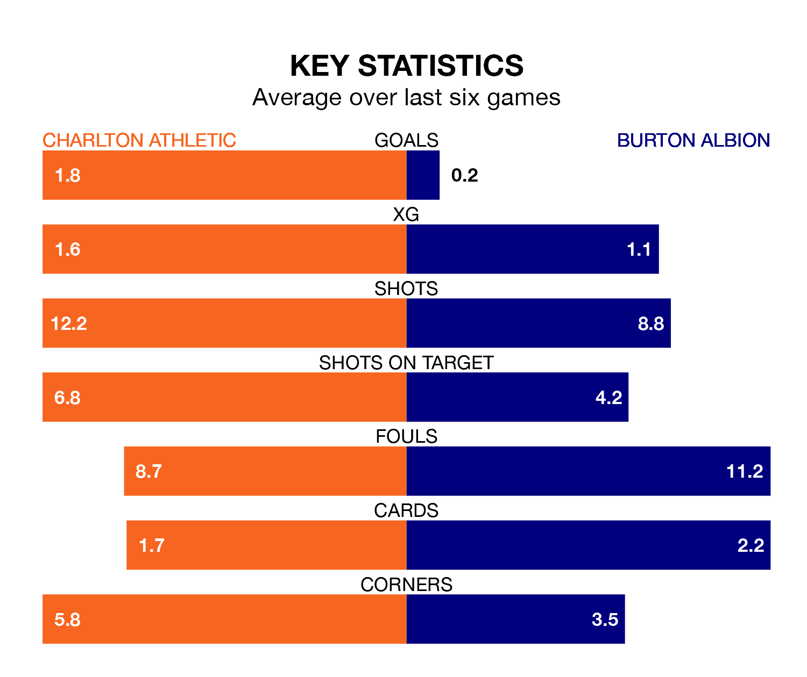

Charlton Athletic are heavy favourites to keep all three points at home in Saturday's kick-off against Burton Albion.
The Addicks, who sit 11th in EFL League One with 20 games played, are priced at 1.6 to seal victory at the Valley.
Sitting eight places and eight points behind them in the table, Burton are 4.8 to win with *Betting Company*, while the draw is at 3.9.
Charlton are in mixed form in EFL League One, with two wins and four draws from their last six games.
With no wins and a draw over that period, Burton's form is much worse – they have taken one point from 18, compared to Athletic's 10.
In Alfie May, the Addicks have the league's most on-form striker so far this season. He has notched 15 goals in 19 appearances.
His goal rate of one every 114 minutes is much quicker than that of Joe Powell, Albion's top scorer with a goal every 450 minutes, and a total of four goals in 20 games.
With 17 goals in 21 games so far this season, the Brewers are scoring at below the league average rate with 0.8 goals per game. And they are conceding more than average, letting in 32 goals at a rate of 1.5 per game.
The hosts, meanwhile, are above average scorers, with 1.6 goals per game, compared to a league average of 1.3. They have conceded 1.4 goals per game.
In the last three years, Charlton and Burton have played each other on five occasions. Charlton won three of them, Burton one, and they drew once.
On average, the Addicks scored 2.0 goals and the Brewers 1.4 in those matches.
Their last meeting was on April 10, when Charlton won 3-2 at home.
Charlton's last match was on December 16, a 1-1 draw against Barnsley, with Corey Taylor getting the goal for the Addicks.
Burton lost 3-0 against Oxford United last time out, also on December 16.
